Within Meddbase, you can create image documents. These have a range of features available for editing and annotation. This document summarises what these features are available.
There is a related article that explains the process of how to create an image document.
If you have an image on a clipboard, you can paste it to your image document using CTRL + V.
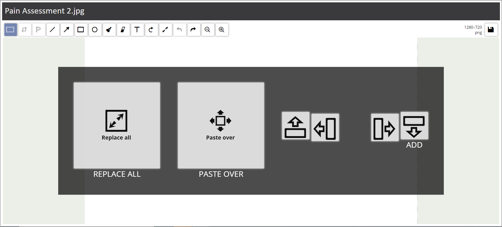
From here you have choices as to whether to:
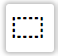 | You can select an area of the image. Having selected an area you to take further actions such as: |
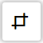 | When you have selected an area of an image, you can use the Crop image to selected area. This can be useful if you have white space that isn’t required and you want to remove redundant space outside of the selected area. |
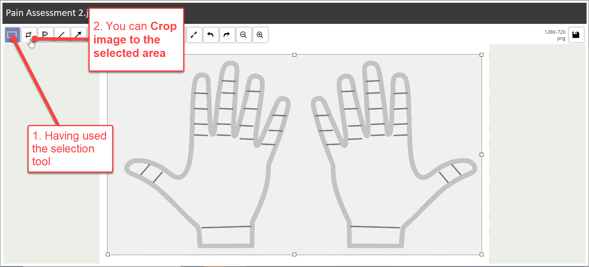
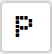 | When you have selected an area of an image, you can Pixelate its contents. This can be particularly useful if there is sensitive content of an image document that needs to be obscured. |
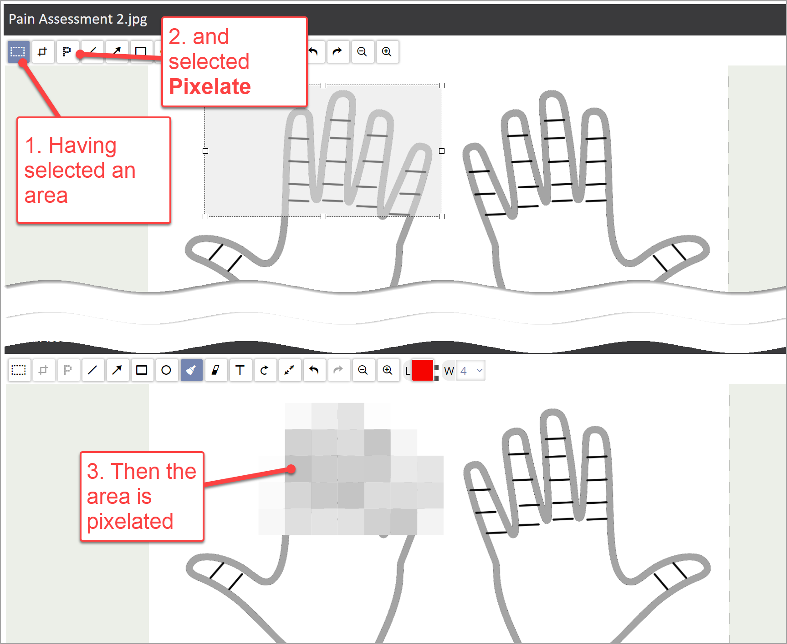
| Within an image document, you can Draw lines to help identify or annotate content. |
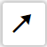 | Within an image document, you can also use Draw arrow to help identify or annotate content. This can help if you want to point to specific points of interest on an image. This feature works in conjunction with the colour button, line size button and shadow (SH) tick box to change the properties of the arrow line drawn on the image. |
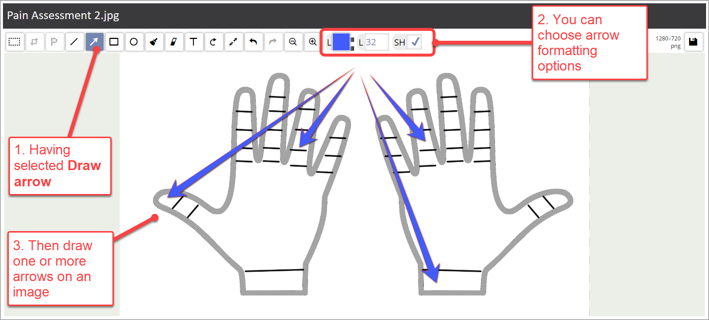
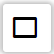 | Within an image document, you can Draw rectangle. This could be used to help identify an area of the image. Or potentially add a boundary to image content. This feature works in conjunction with the line colour button, fill colour line button and shadow (SH) tick box to change the properties of the rectangle drawn on the image. |
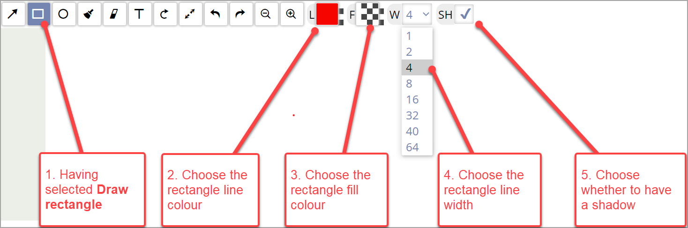
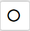 | Within an image document, you can Draw ellipse in a similar way that you can draw a rectangle. |
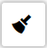 | Within an image document, you can use the Brush to draw freestyle lines on the image document. This feature works in conjunction with the colour button and brush width to change the properties of the brush line drawn on the image. |
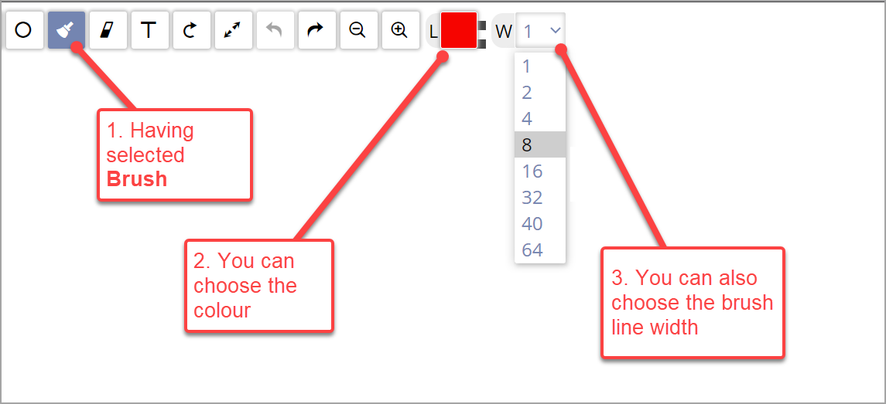
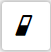 | Within an image document, you can use the Eraser to remove content from the page. This could be use used as an alternative to Pixelate to remove sensitive content from the image. This feature works in conjunction with the eraser width to change the properties of the eraser line width on the image. |
Within an image document, you can use Text to insert text to the page. When selected, this feature works in conjunction with a range of formatting properties such as font type, font size, bold, italic to control the presentation format of the text. |
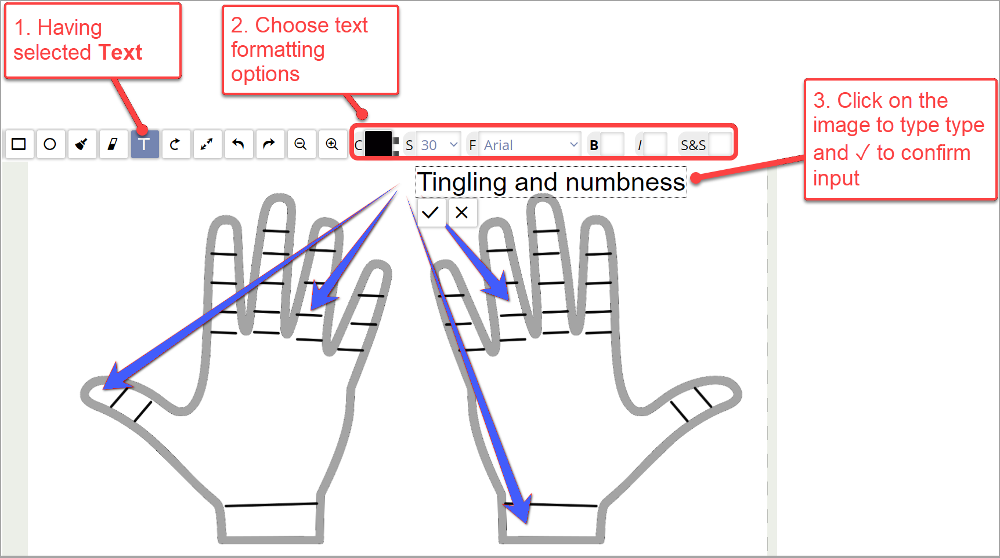
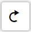 | You can use Rotate to rotate an image clockwise 90 degrees with each click. As an example, this can help if you have an image that is upside down when scanned, you can use Rotate to reset the image to the correct orientation. |
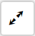 | You can use Resize or scale to change the size of the image (using the top left corner as the anchor point) or to adjust the scale of the image. In addition, there is the option to maintain the ratio so that any change to Width is matched in the relative adjustment to its Height. |
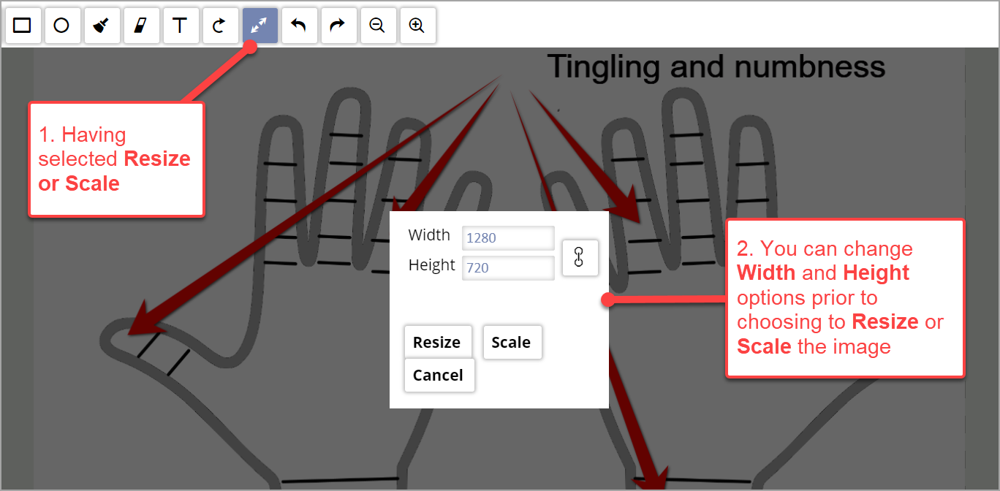
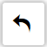 | You can use Undo to undo previous actions carried out in the image document. |
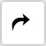 | You can use Redo to action previous actions that have been undone by mistake. |
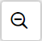 | You can use Zoom Out to reduce the magnification of an image. |
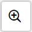 | You can use Zoom In to increase the magnification of an image. This can help if you have an image with small content that needs to be viewed in more detail. |
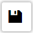 | You can Save changes made in the Image document. When an image is saved you can continue to view or make further annotations. You’ll also note that the image icon changes to being greyed out directly after a save and only becomes active again after further changes are made. |